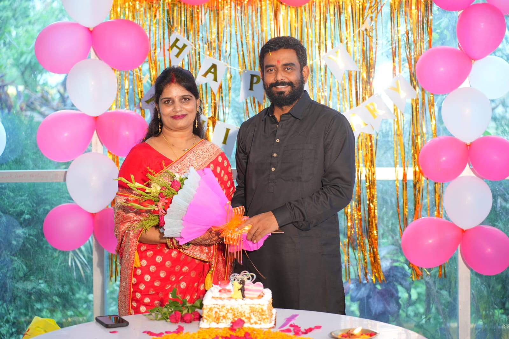
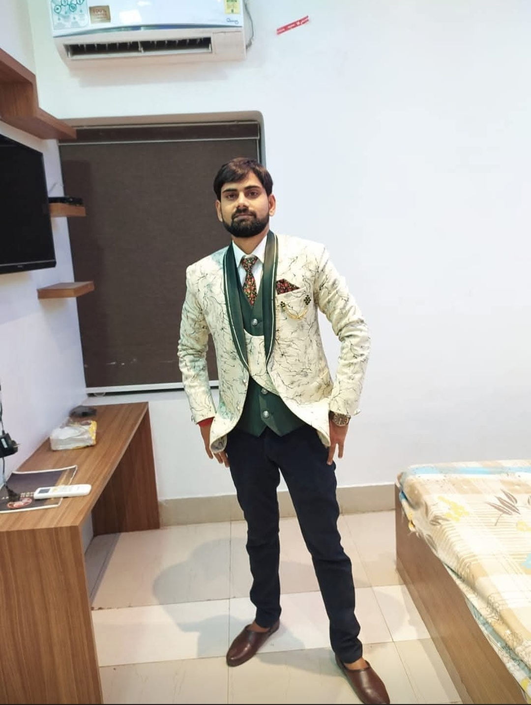
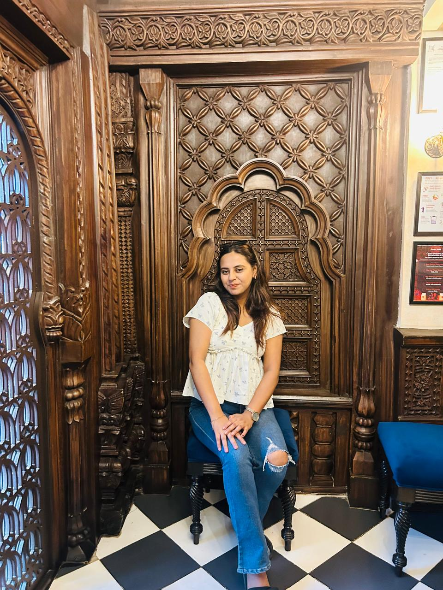
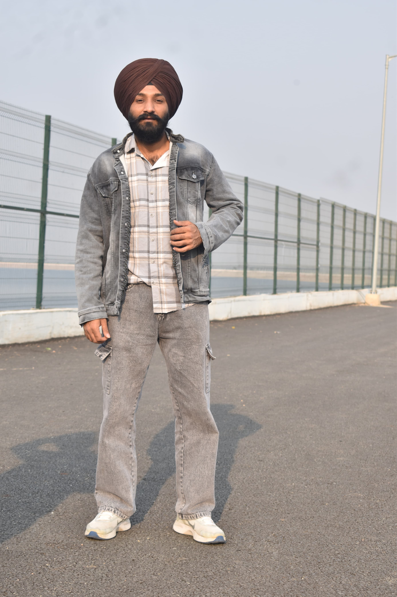

A page from one of your students — the one who fidgeted in the back row, asked too many questions, who bunked your classes for dance practice sessions, who rarely attended school and remember more of what you taught than I ever let on.
Not just the syllabus. Not just the grades. You gave us the extra five minutes after the bell when we still didn't get it. You noticed the day we were exhausted because of long lectures, and you never made a big deal of asking why. You believed we could do the thing long before we believed it ourselves — and then you made us prove it.
— The ones who cleared all our doubts even when the bell rang no matter how many times we asked our silly questions!None of that shows up on a report card. So this page exists to write it down somewhere it will.
— the ones who remembered our names from day oneThe mornings you taught us without our books because you already knew half the class had forgotten to bring theirs — again.
The time you stayed back after the bell to explain the same problem a third way, like it was the first time you'd said it.
.the same jokes and punchlines you make every single year that isn't even that funny anymore.
The way you said "try it, I'll wait" instead of just giving us the answer — and actually waited.
To the one who taught the subject nobody liked, and somehow made us curious for it.
To the one who never once made us feel small for asking the "obvious" question.
To every teacher whose name we'll forget to say out loud today, but never forget what they did.

Thank you for nurturing our institution with unwavering devotion, guiding us with warmth, and creating a supportive environment where every student feels inspired to dream bigger.
Thank you for your disciplined guidance, your motivating presence across every challenge, and your constant belief in our ability to accomplish great things.

Thank you for managing everything behind the scenes with endless patience, keeping us grounded, and always greeting students with an open ear and sound advice.

Thankyou!❣️ for handling out classroom's endless chatters, sometimes even participating in our silly conversations. Thankyou for listening to us patiently and giving us endless advices and strength. Thankyou for being our best class teacher 🫶🏻💗.

Thankyou for bringing every biology chapter to life with your infectious energy and amazing explanations which turns difficult topics into engaging discussions!
Thankyou for your cool, chalant, and practical perspective, and for always making sure that learning extends beyond the classroom into the real world. Thankyou for making our history lessons interesting!
Everyone who opens this page today can add a note — students and teachers alike.
However today goes — a small gift, a card, a bit of noise in the hallway — the real thank-you is just this: I noticed. I'm paying attention, even when it doesn't look like it. And I'm better because you showed up, again and again.